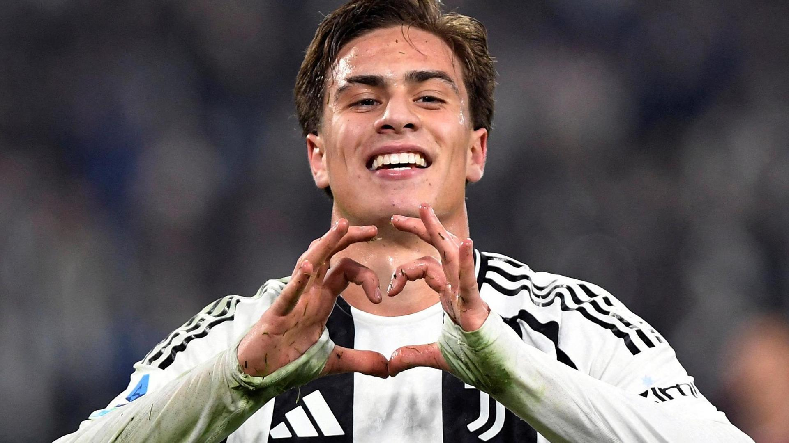

La nostra storia, tappa dopo tappa.
Ci eravamo già incontrati un anno prima. In auletta. Tra libri e qualcosa che non aveva ancora il coraggio di nascere. Poi ci siamo persi. E tra questi alberi ci siamo ritrovati. Questa volta senza fretta (senza baci ahahah). Perché quando qualcosa è giusto… torna.
Dove tutto è riniziato davvero. Ti ho portata a mangiare la pizza fritta. Convintissimo fosse un’idea geniale. Solo dopo ho scoperto che ti aveva fatto schifo. Eppure sei rimasta. Forse non era la pizza il motivo.
Intorno a noi gente super a proprio agio. Molto romana. Noi a chiederci se l’acqua fosse troppo freda. Alla fine ci siamo buttati. Un po’ come con noi. Con un po’ di timore. Ma insieme.
Un giardino che sembrava finto. Colori che non pensavamo nemmeno esistessero. E la scoperta ufficiale della birra alle “Visciòle”. Pronunciato male da quel tizio accanto a noi. E diventato nostro per sempre.
Io guardavo la reggia. Ma soprattutto guardavo te. Mentre mi spiegavi ogni prospettiva, ogni dettaglio. Lì ho capito che l’architettura mi piaceva… ma la tua passione di più.
Vallate immense. Da film. La cappella della Madonna di Vitaleta. Un posto perfetto per sposarsi. Se non fosse per il vento che voleva farci volare via.
La porta di Allah alle spalle. Il Blue Hole. Dahab. I quad all’alba nel deserto. Siamo tornati con un bagaglio pieno di esperienze. E solo un leggerissimo mal di pancia (grazie ghiaccio del Farsha)
Spiagge paradisiache. Raggiungibili solo dopo percorsi degni di un corso avanzato di arrampicata. Sudati. Stanchi. Ma convinti di essere atleti olimpici.
Weekend insieme. Atmosfera romantica. E magari una partita della Juve… Yildiz permettendo.
